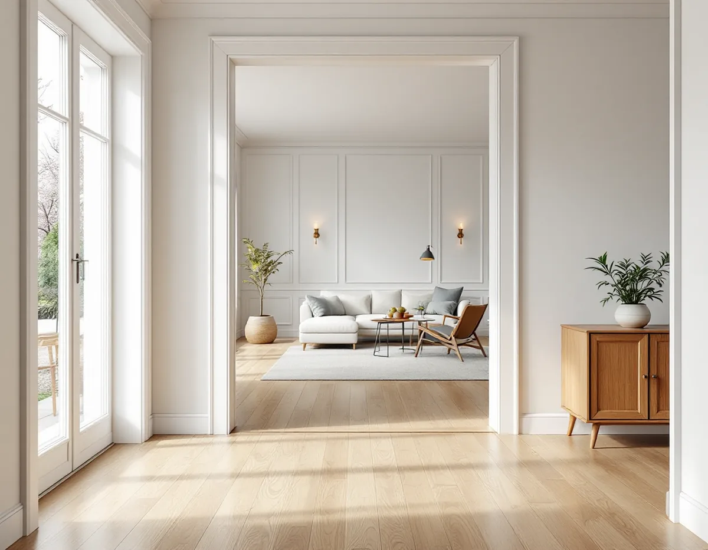
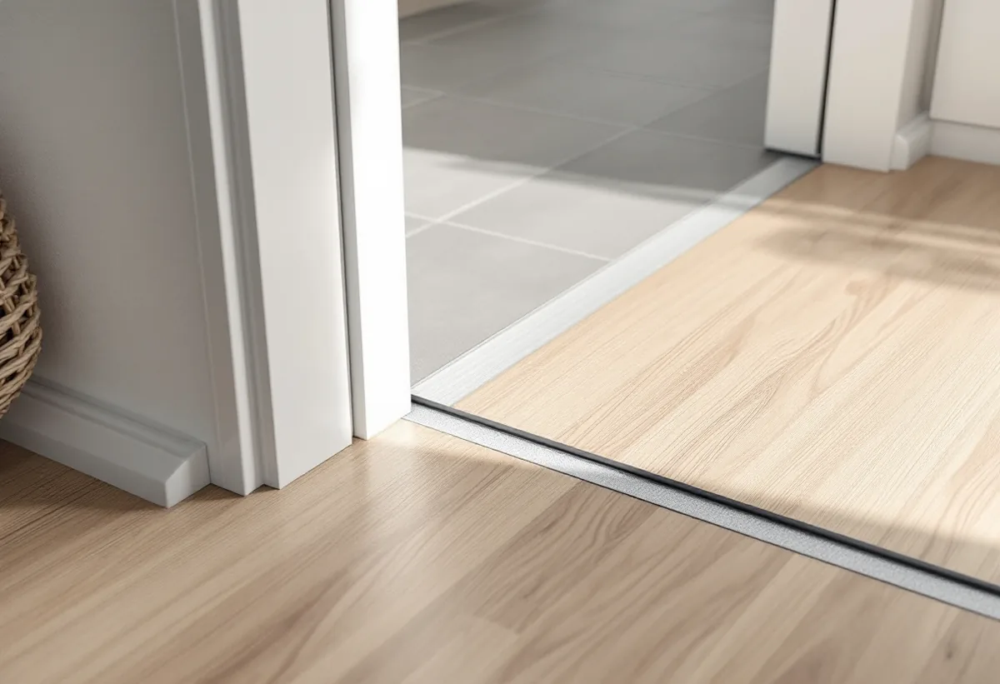

Mätning
Vi mäter golvhöjderna i alla rum och noterar var trösklar och nivåskillnader finns.
En tröskel på några centimeter märks inte förrän någon i familjen börjar använda rullator eller rullstol. Då blir varje nivåskillnad mellan rummen ett hinder. Geal Entreprenad AB lägger nya golv och jämnar ut nivåer i hela Österåker – i Åkersberga, Svinninge och ute i skärgården – med gratis platsbesök och skriftligt kostnadsförslag.

Enligt SCB fanns det 13 488 bostäder i småhus i Österåker 2024 – villor och radhus i Åkersberga, äldre sommarhus som i dag är helårsbostäder och hus ute i skärgården. Många av dem har fått nya golv rum för rum under årens lopp, och sällan med samma material eller samma underlag.
Klinker i hallen, parkett i vardagsrummet, en plastmatta kvar i ett sovrum och en tillbyggnad med eget bjälklag: varje lager har sin tjocklek, och skillnaderna samlas vid dörröppningarna. För de flesta är det en skönhetsfråga. För den som har svårt att lyfta fötterna, går med rullator eller sitter i rullstol blir varje kant ett hinder. Därför börjar vi med att kartlägga var nivåerna skiljer sig åt och varför, innan vi föreslår något nytt golv.

En tröskel kan finnas där för att täcka en skarv mellan två golvmaterial, för att hålla vatten borta eller för att golven på var sin sida helt enkelt har olika höjd. Den första sorten går ofta att ersätta med en låg övergångslist. Den sista kräver att något av golven byggs upp eller sänks.
Vi mäter höjden i varje rum och ser vad som ligger under. Ibland räcker det att ett nytt golv i det lägre rummet byggs upp några millimeter, ibland behöver ett äldre golv rivas för att det nya ska hamna i samma nivå som grannrummet. Vid badrum och tvättstuga gäller andra regler, eftersom golvet där är en del av tätskiktet. Mer om golvtyper och underlag finns på sidan om golvläggning.
Golvets tjocklek avgör hur mycket nivån ändras. Enligt Golvbranschen har lamellparkett oftast en total tjocklek på 12–15 millimeter och läggs normalt flytande, medan självbärande produkter är 20–22 millimeter. Linoleum tillverkas i tjocklekar från 2 till 4 millimeter, och plastmattor av PVC är vanligen 1,4–4 millimeter tjocka.
Ett tunt material gör det lättare att få samma nivå som ett angränsande rum, men det ställer större krav på att underlaget är plant. Linoleum och PVC finns också med stegljudsdämpande baksida. Vi visar vilka alternativ som ger lägst övergång i just ditt hus.
Har någon i hushållet en bestående funktionsnedsättning kan ni söka bostadsanpassningsbidrag hos Österåkers kommun. Bidraget gäller fasta funktioner i och i anslutning till bostaden, och borttagning av trösklar är ett av kommunens exempel, liksom ramper. Det ges inte för vanligt underhåll eller för tekniska brister i bostaden, och inte om behovet kan lösas med ett hjälpmedel.
Till ansökan behövs ett intyg från till exempel en arbetsterapeut, sjukgymnast eller läkare, och ett medgivande från den som äger bostaden. Vid större anpassningar vill kommunen också ha ett förslag på hur bostaden ska anpassas, till exempel med ritning och offert. Boverkets handbok om bidraget ger fler exempel, som att höja altanen i nivå med bostadens ingång.
Skatteverket skriver att du inte kan få rotavdrag för ett arbete som du får bidrag eller annat ekonomiskt stöd för från stat, kommun eller region. Får ni bostadsanpassningsbidrag för att ta bort trösklarna gäller alltså inte rotavdraget för just det arbetet.
Vill ni samtidigt byta golv i övriga rum kan den delen däremot ge rotavdrag på vanligt sätt. Därför delar vi upp kostnadsförslaget så att det tydligt framgår vilka arbeten som hör till anpassningen och vilka som inte gör det.
Vi mäter golvhöjderna i alla rum och noterar var trösklar och nivåskillnader finns.
Du får ett skriftligt kostnadsförslag där anpassningar och övrigt golvarbete står var för sig.
Söker ni bostadsanpassningsbidrag kan kostnadsförslaget användas som underlag.
Trösklar och gamla golv tas bort där det behövs, och dörrar justeras.
Golvet läggs så att övergångarna mellan rummen blir så låga som möjligt.
Vi går igenom övergångarna tillsammans och ser att dörrarna går fritt.
Skatteverket räknar slipning och byte av golv i ett småhus du äger och bor i som rotarbete. Avdraget är 30 procent av arbetskostnaden och högst 50 000 kr per person och år, inom ett gemensamt tak för rot och rut på 75 000 kr. Det gäller inte arbete som betalas med bidrag.
Material och resor ingår inte i avdraget. Geal drar avdraget direkt på fakturan.
Hur många trösklar och nivåskillnader som ska bort, golvytan och vilket material du väljer avgör mest. Om dörrar behöver kortas eller ett golv byggas upp tillkommer det. Platsbesöket är gratis och du får ett skriftligt kostnadsförslag.
Parkett, trägolv, klinker och slipning.
Golvläggning i Stockholm →Takbyte, takbesiktning och plåtarbeten.
Takläggare i Österåker →Svinninge, sommarvillor och sportstugor.
Takrenovering i Österåker →Uthyrning, kulturmiljö och fornlämningar.
Attefallshus i Österåker →VA-utbyggnad, öar och vattensmarta val.
Badrumsrenovering i Österåker →Rivning, markarbete och gatukostnader.
Byggföretag i Österåker →Skärgårdshus, fritidshus och villor i Österåker.
Fasadrenovering i Österåker →Varsamhet, kulturvärden och kustlägen i Österåker.
Fönsterbyte i Österåker →Sommarvillor, röda stugor och efterkrigsvillor.
Målare i Österåker →Bryggor, altaner och äldre snickerier.
Snickare i Österåker →Grannmedgivande, strandskydd och utstakning.
Tillbyggnad i Österåker →